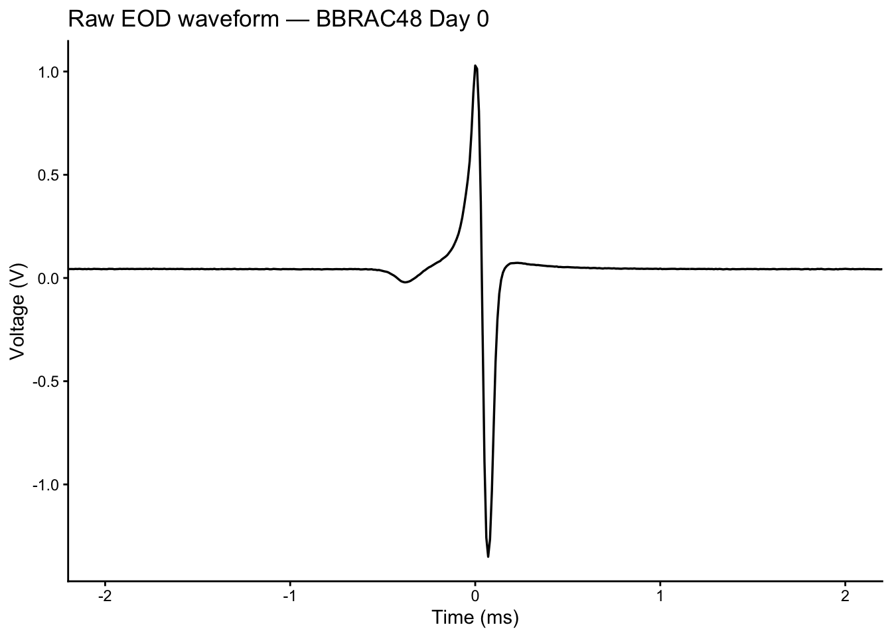
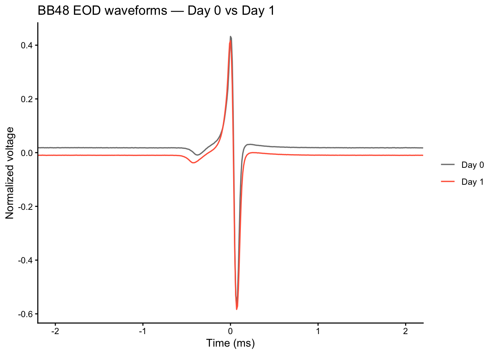
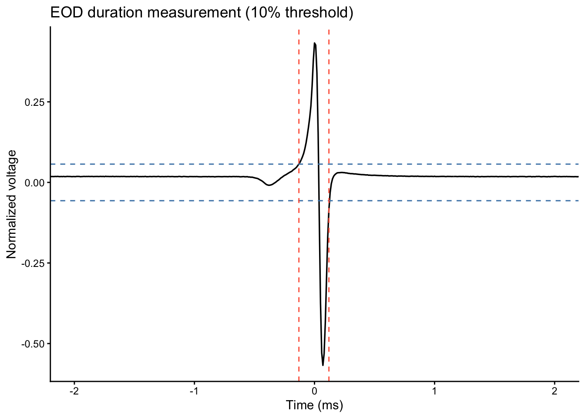
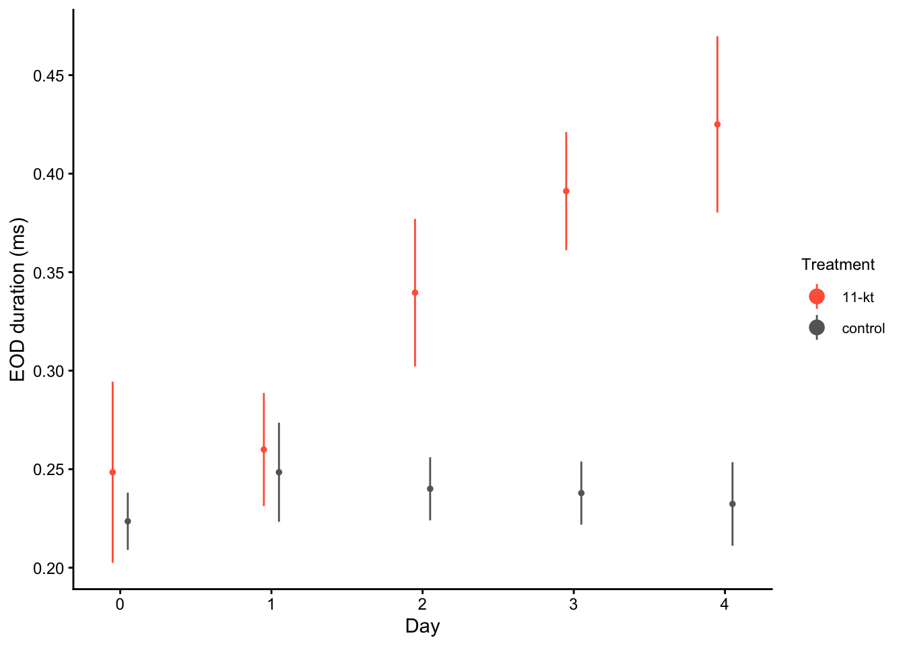
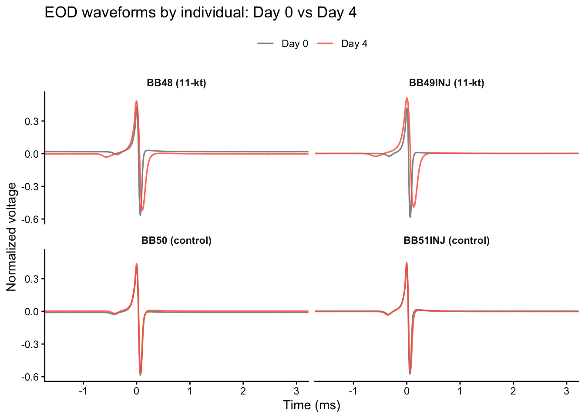

library(jsonlite)
eod_data <- read_json("data/eod_duration/BB_T48_DAY0_MAY7.json")
cat("Number of recordings:", length(eod_data), "\n")Number of recordings: 11 jsonlite packageggplot2In the previous episodes, you learned how testosterone shapes the electric organ discharge (EOD) in Brienomyrus brachyistius, and you performed the implantation procedure yourself. Now it’s time to analyze the data.
EOD recordings were captured daily over 5 days for animals implanted with either 11-ketotestosterone (11-kt) or a blank control. Each recording session is stored as a JSON file containing multiple trials. Our goal is to:
JSON files can be read in R using the jsonlite package. The read_json() function returns a list that maps directly onto the file structure.
Number of recordings: 11 Each element of eod_data is one recording trial, stored as a named list. Use names(eod_data[[1]]) to see the available fields and $ to access them.
Using the eod_data object already loaded, print the specimen number, species, temperature, sampling rate, and number of waveform samples for the first recording trial.
Hint: names(eod_data[[1]]) shows the available fields.
[1] "DeviceInfo" "time" "date"
[4] "Rate" "wave" "comments"
[7] "species" "location" "specimenno"
[10] "gain" "amplifiercoupling" "temp" Specimen: BBRAC48 Species: Brienomyrus brachyistius Temp: 24.0 Rate: 100000 Samples: 2049 We convert sample indices to milliseconds using the sampling rate stored in the file, then plot with ggplot2.
library(ggplot2)
rate_hz <- eod_data[[1]]$Rate
wave <- unlist(eod_data[[1]]$wave)
p1_idx <- which.max(wave)
time_ms <- (seq_along(wave) - p1_idx) / rate_hz * 1000
waveform_df <- data.frame(time_ms = time_ms, voltage = wave)
ggplot(waveform_df, aes(x = time_ms, y = voltage)) +
geom_line(linewidth = 0.6) +
coord_cartesian(xlim = c(-2, 2)) +
theme_classic() +
labs(
x = "Time (ms)",
y = "Voltage (V)",
title = paste("Raw EOD waveform —", eod_data[[1]]$specimenno, "Day 0")
)
The Day 0 waveform for BB48 is already loaded as eod_data. Now load the Day 1 recording (data/eod_duration/BB_T48_DAY1_MAY8.json) and plot both waveforms together. Do the shapes look similar?
eod_day1 <- read_json("data/eod_duration/BB_T48_DAY1_MAY8.json")
wave1 <- unlist(eod_day1[[1]]$wave)
p1_idx1 <- which.max(wave1)
time1_ms <- (seq_along(wave1) - p1_idx1) / eod_day1[[1]]$Rate * 1000
# Normalize each waveform to peak-to-peak = 1 so amplitudes are comparable
wave0_norm <- wave / (max(wave) - min(wave))
wave1_norm <- wave1 / (max(wave1) - min(wave1))
df_compare <- rbind(
data.frame(time_ms = time_ms, voltage = wave0_norm, session = "Day 0"),
data.frame(time_ms = time1_ms, voltage = wave1_norm, session = "Day 1")
)
ggplot(df_compare, aes(x = time_ms, y = voltage, color = session)) +
geom_line(linewidth = 0.6) +
coord_cartesian(xlim = c(-2, 2)) +
theme_classic() +
scale_colour_manual(values = c("Day 0" = "grey50", "Day 1" = "tomato")) +
labs(
x = "Time (ms)", y = "Normalized voltage",
title = "BB48 EOD waveforms — Day 0 vs Day 1",
color = NULL
)
These are the first two days of recording for BB48, before treatment has had time to act. The waveform shapes should be very similar.
EOD duration is not read directly from the file — it must be calculated from the waveform. The standard approach is:
# 1. Normalize to peak-to-peak = 1
wave_norm <- wave / (max(wave) - min(wave))
# 2. Apply 10% threshold
threshold <- 0.1 * max(abs(wave_norm))
above_thresh <- which(abs(wave_norm) > threshold)
start_idx <- min(above_thresh)
end_idx <- max(above_thresh)
# 3. Duration in milliseconds
duration_ms <- (end_idx - start_idx) / rate_hz * 1000
cat("EOD duration (10% threshold):", round(duration_ms, 3), "ms\n")EOD duration (10% threshold): 0.25 msWe can visualize the threshold on the normalized waveform to see exactly which part of the signal is being measured:
norm_df <- data.frame(time_ms = time_ms, voltage = wave_norm)
ggplot(norm_df, aes(x = time_ms, y = voltage)) +
geom_line(linewidth = 0.6) +
geom_hline(
yintercept = c(threshold, -threshold),
linetype = "dashed", color = "steelblue", linewidth = 0.5
) +
geom_vline(
xintercept = c(time_ms[start_idx], time_ms[end_idx]),
linetype = "dashed", color = "tomato", linewidth = 0.5
) +
coord_cartesian(xlim = c(-2, 2)) +
theme_classic() +
labs(
x = "Time (ms)",
y = "Normalized voltage",
title = "EOD duration measurement (10% threshold)"
)
Repeat the duration calculation using a 20% threshold instead of 10%. How does the measured duration change, and why?
This is important: the choice of threshold is an analytical decision that must be reported in any publication.
Duration at 20% threshold: 0.18 msDuration at 10% threshold: 0.25 msA higher threshold excludes the low-amplitude tails of the waveform, making the measured duration shorter. Neither threshold is “wrong” — but the choice must be consistent across all animals in a study and clearly reported.
Now that we know how to measure EOD duration from a single file, we can apply the same logic to every recording session in the study. Rather than computing durations by hand for each file, we write a function and let R do the work.
The study metadata is stored in all_surviving_recordings.csv, which maps each JSON file to its animal, day, and treatment group:
file specimenno day Treatment Comment
1 BB_T48_DAY0_MAY7.json BB48 0 11-kt NA
2 BB_T48_DAY1_MAY8.json BB48 1 11-kt NA
3 BB_T48_DAY2_MAY9.json BB48 2 11-kt NA
4 BB_T48_DAY3_MAY10.json BB48 3 11-kt NA
5 BB_T48_DAY4_MAY11.json BB48 4 11-kt NA
6 BB_T49INJ_DAY0_MAY12.json BB49INJ 0 11-kt NA
7 BB_T49INJ_DAY1_MAY13.json BB49INJ 1 11-kt NA
8 BB_T49INJ_DAY2_MAY14.json BB49INJ 2 11-kt NA
9 BB_T49INJ_DAY3_MAY15.json BB49INJ 3 11-kt NA
10 BB_T49INJ_DAY4_MAY16.json BB49INJ 4 11-kt NA
11 BB_T50_DAY0_MAY7.json BB50 0 control NA
12 BB_T50_DAY1_MAY8.json BB50 1 control NA
13 BB_T50_DAY2_MAY9.json BB50 2 control NA
14 BB_T50_DAY3_MAY10.json BB50 3 control NA
15 BB_T50_DAY4_MAY11.json BB50 4 control NA
16 BB_T51INJ_DAY0_MAY12.json BB51INJ 0 control NA
17 BB_T51INJ_DAY1_MAY13.json BB51INJ 1 control NA
18 BB_T51INJ_DAY2_MAY14.json BB51INJ 2 control NA
19 BB_T51INJ_DAY3_MAY15.json BB51INJ 3 control NA
20 BB_T51INJ_DAY4_MAY16.json BB51INJ 4 control NAWe write a small function that takes a file path, loads the JSON, computes EOD duration for every trial, and returns the mean:
mean_eod_duration <- function(file_path, threshold = 0.1) {
recs <- read_json(file_path)
durations <- sapply(recs, function(rec) {
w <- unlist(rec$wave)
rate <- rec$Rate
w_norm <- w / (max(w) - min(w))
thresh <- threshold * max(abs(w_norm))
above <- which(abs(w_norm) > thresh)
(max(above) - min(above)) / rate * 1000
})
mean(durations)
}We then apply this function to every row in the metadata table:
file specimenno day Treatment Comment EOD
1 BB_T48_DAY0_MAY7.json BB48 0 11-kt NA 0.2472727
2 BB_T48_DAY1_MAY8.json BB48 1 11-kt NA 0.2480000
3 BB_T48_DAY2_MAY9.json BB48 2 11-kt NA 0.2963636
4 BB_T48_DAY3_MAY10.json BB48 3 11-kt NA 0.3650000
5 BB_T48_DAY4_MAY11.json BB48 4 11-kt NA 0.4009091
6 BB_T49INJ_DAY0_MAY12.json BB49INJ 0 11-kt NA 0.2030769With the full dataset assembled, we can visualize how EOD duration changes across the 5-day experiment for each treatment group. Points show the group mean; error bars show ±1 standard deviation.
ggplot(metadata, aes(x = day, y = EOD, group = Treatment, color = Treatment)) +
stat_summary(
fun = "mean",
geom = "pointrange",
fun.max = function(x) mean(x) + sd(x),
fun.min = function(x) mean(x) - sd(x),
position = position_dodge(width = 0.2, preserve = "total"),
size = 0.7,
fatten = 0.5
) +
scale_x_continuous(name = "Day", breaks = 0:4) +
scale_y_continuous(
name = "EOD duration (ms)",
breaks = scales::breaks_pretty(10)
) +
scale_colour_manual(values = c("11-kt" = "tomato", "control" = "grey40")) +
theme_classic() +
theme(
axis.text = element_text(size = 9),
legend.text = element_text(size = 8),
legend.title = element_text(size = 9)
)
Looking at the raw waveforms makes the treatment effect intuitive. Here we load the Day 0 and Day 4 recordings for each fish, normalize every waveform to a peak-to-peak amplitude of 1, and centre on the P1 peak. Overlaying the two traces for each animal shows directly how the waveform lengthens — or stays the same — depending on treatment.
load_waveform_norm <- function(file_path) {
recs <- read_json(file_path)
rec <- recs[[1]]
w <- unlist(rec$wave)
rate <- rec$Rate
p1_idx <- which.max(w)
w_norm <- w / (max(w) - min(w))
data.frame(
time_ms = (seq_along(w) - p1_idx) / rate * 1000,
voltage_norm = w_norm
)
}
d0d2 <- metadata %>% filter(day %in% c(0, 4))
waveform_overlay <- bind_rows(lapply(seq_len(nrow(d0d2)), function(i) {
fp <- file.path("data/eod_duration", d0d2$file[i])
df <- load_waveform_norm(fp)
df$fish_label <- paste0(d0d2$specimenno[i], " (", d0d2$Treatment[i], ")")
df$Day <- paste0("Day ", d0d2$day[i])
df
}))
ggplot(waveform_overlay, aes(x = time_ms, y = voltage_norm, color = Day)) +
geom_line(linewidth = 0.6, alpha = 0.85) +
coord_cartesian(xlim = c(-1.5, 3)) +
facet_wrap(~fish_label, ncol = 2) +
scale_colour_manual(values = c("Day 0" = "grey50", "Day 4" = "tomato")) +
theme_classic() +
theme(
strip.background = element_blank(),
strip.text = element_text(face = "bold"),
legend.position = "top"
) +
labs(
x = "Time (ms)",
y = "Normalized voltage",
color = NULL,
title = "EOD waveforms by individual: Day 0 vs Day 4"
)
jsonlite::read_json() loads JSON files as nested R lists; each recording trial is a named list with fields like wave, Rate, temp, and specimenno---
title: 'Examining EOD Duration from Raw Recordings'
mode: bioinformatics
teaching: 20
exercises: 25
optional: false
location: Loeb 156 (Breakroom) # room shown in the schedule group heading, e.g. Loeb 160
---
::: {.callout-note title="Questions"}
- How do we load JSON EOD recordings into R?
- How is EOD duration measured from a raw waveform?
- Did 11-ketotestosterone treatment change EOD duration over time?
:::
::: {.callout-tip title="Objectives"}
- Load JSON recording files into R using the `jsonlite` package
- Navigate a list of recording objects to extract waveform data and metadata
- Visualize a raw EOD waveform using `ggplot2`
- Measure EOD duration by applying a threshold to a normalized waveform
- Build a tidy dataset by applying a duration function across many files
- Interpret a faceted comparison plot of EOD duration across treatment groups
:::
## Introduction
In the previous episodes, you learned how testosterone shapes the electric organ discharge (EOD) in *Brienomyrus brachyistius*, and you performed the implantation procedure yourself. Now it's time to analyze the data.
EOD recordings were captured daily over 5 days for animals implanted with either 11-ketotestosterone (11-kt) or a blank control. Each recording session is stored as a JSON file containing multiple trials. Our goal is to:
1. Load a raw EOD waveform and visualize it
2. Write a function that measures EOD duration from any recording file
3. Apply that function across all recording sessions to build a dataset
4. Visualize how EOD duration changes over time for each treatment group
## Loading EOD Recording Files in R
JSON files can be read in R using the `jsonlite` package. The `read_json()` function returns a list that maps directly onto the file structure.
```{r load-json, message=FALSE, warning=FALSE}
library(jsonlite)
eod_data <- read_json("data/eod_duration/BB_T48_DAY0_MAY7.json")
cat("Number of recordings:", length(eod_data), "\n")
```
Each element of `eod_data` is one recording trial, stored as a named list. Use `names(eod_data[[1]])` to see the available fields and `$` to access them.
::: {.callout-important title="Challenge 1: Explore the recording metadata (5 min)"}
Using the `eod_data` object already loaded, print the specimen number, species, temperature, sampling rate, and number of waveform samples for the first recording trial.
*Hint:* `names(eod_data[[1]])` shows the available fields.
:::: {.callout-tip title="Solution" collapse="true"}
```{r challenge-1-solution}
names(eod_data[[1]])
cat("Specimen:", eod_data[[1]]$specimenno, "\n")
cat("Species: ", eod_data[[1]]$species, "\n")
cat("Temp: ", eod_data[[1]]$temp, "\n")
cat("Rate: ", eod_data[[1]]$Rate, "\n")
cat("Samples: ", length(eod_data[[1]]$wave), "\n")
```
::::
:::
## Visualizing an EOD Waveform
We convert sample indices to milliseconds using the sampling rate stored in the file, then plot with `ggplot2`.
```{r plot-waveform, message=FALSE, warning=FALSE, fig.alt="Line plot of a single EOD waveform showing voltage in volts on the y-axis and time in milliseconds on the x-axis. The waveform has a characteristic biphasic shape with a positive P1 peak followed by a negative P2 trough.", fig.cap="A single raw EOD waveform recorded from *B. brachyistius*. The biphasic waveform is characteristic of mormyrid electric fish."}
library(ggplot2)
rate_hz <- eod_data[[1]]$Rate
wave <- unlist(eod_data[[1]]$wave)
p1_idx <- which.max(wave)
time_ms <- (seq_along(wave) - p1_idx) / rate_hz * 1000
waveform_df <- data.frame(time_ms = time_ms, voltage = wave)
ggplot(waveform_df, aes(x = time_ms, y = voltage)) +
geom_line(linewidth = 0.6) +
coord_cartesian(xlim = c(-2, 2)) +
theme_classic() +
labs(
x = "Time (ms)",
y = "Voltage (V)",
title = paste("Raw EOD waveform —", eod_data[[1]]$specimenno, "Day 0")
)
```
::: {.callout-important title="Challenge 2: Compare waveforms across recording sessions (5 min)"}
The Day 0 waveform for BB48 is already loaded as `eod_data`. Now load the Day 1 recording (`data/eod_duration/BB_T48_DAY1_MAY8.json`) and plot both waveforms together. Do the shapes look similar?
:::: {.callout-tip title="Solution" collapse="true"}
```{r challenge-2-solution}
eod_day1 <- read_json("data/eod_duration/BB_T48_DAY1_MAY8.json")
wave1 <- unlist(eod_day1[[1]]$wave)
p1_idx1 <- which.max(wave1)
time1_ms <- (seq_along(wave1) - p1_idx1) / eod_day1[[1]]$Rate * 1000
# Normalize each waveform to peak-to-peak = 1 so amplitudes are comparable
wave0_norm <- wave / (max(wave) - min(wave))
wave1_norm <- wave1 / (max(wave1) - min(wave1))
df_compare <- rbind(
data.frame(time_ms = time_ms, voltage = wave0_norm, session = "Day 0"),
data.frame(time_ms = time1_ms, voltage = wave1_norm, session = "Day 1")
)
ggplot(df_compare, aes(x = time_ms, y = voltage, color = session)) +
geom_line(linewidth = 0.6) +
coord_cartesian(xlim = c(-2, 2)) +
theme_classic() +
scale_colour_manual(values = c("Day 0" = "grey50", "Day 1" = "tomato")) +
labs(
x = "Time (ms)", y = "Normalized voltage",
title = "BB48 EOD waveforms — Day 0 vs Day 1",
color = NULL
)
```
These are the first two days of recording for BB48, before treatment has had time to act. The waveform shapes should be very similar.
::::
:::
## Measuring EOD Duration
EOD duration is not read directly from the file — it must be calculated from the waveform. The standard approach is:
1. **Normalize** the waveform so that the peak-to-peak amplitude = 1
2. **Apply a threshold** (typically 10% of the maximum absolute value) to define where the EOD "starts" and "ends"
3. **Calculate duration** as the time elapsed between the first and last threshold crossings
```{r measure-duration, warning=FALSE}
# 1. Normalize to peak-to-peak = 1
wave_norm <- wave / (max(wave) - min(wave))
# 2. Apply 10% threshold
threshold <- 0.1 * max(abs(wave_norm))
above_thresh <- which(abs(wave_norm) > threshold)
start_idx <- min(above_thresh)
end_idx <- max(above_thresh)
# 3. Duration in milliseconds
duration_ms <- (end_idx - start_idx) / rate_hz * 1000
cat("EOD duration (10% threshold):", round(duration_ms, 3), "ms\n")
```
We can visualize the threshold on the normalized waveform to see exactly which part of the signal is being measured:
```{r plot-threshold, message=FALSE, warning=FALSE, fig.alt="Normalized EOD waveform with horizontal dashed lines at +10% and -10% of the peak amplitude. Vertical dashed lines mark the measured start and end of the EOD, highlighting the duration window.", fig.cap="Threshold-based EOD duration measurement on the normalized waveform."}
norm_df <- data.frame(time_ms = time_ms, voltage = wave_norm)
ggplot(norm_df, aes(x = time_ms, y = voltage)) +
geom_line(linewidth = 0.6) +
geom_hline(
yintercept = c(threshold, -threshold),
linetype = "dashed", color = "steelblue", linewidth = 0.5
) +
geom_vline(
xintercept = c(time_ms[start_idx], time_ms[end_idx]),
linetype = "dashed", color = "tomato", linewidth = 0.5
) +
coord_cartesian(xlim = c(-2, 2)) +
theme_classic() +
labs(
x = "Time (ms)",
y = "Normalized voltage",
title = "EOD duration measurement (10% threshold)"
)
```
::: {.callout-important title="Challenge 3: Sensitivity of the threshold (5 min)"}
Repeat the duration calculation using a **20% threshold** instead of 10%. How does the measured duration change, and why?
This is important: the choice of threshold is an **analytical decision** that must be reported in any publication.
:::: {.callout-tip title="Solution" collapse="true"}
```{r challenge-3-solution}
threshold_20 <- 0.2 * max(abs(wave_norm))
above_20 <- which(abs(wave_norm) > threshold_20)
duration_20ms <- (max(above_20) - min(above_20)) / rate_hz * 1000
cat("Duration at 20% threshold:", round(duration_20ms, 3), "ms\n")
cat("Duration at 10% threshold:", round(duration_ms, 3), "ms\n")
```
A higher threshold excludes the low-amplitude tails of the waveform, making the measured duration shorter. Neither threshold is "wrong" — but the choice must be consistent across all animals in a study and clearly reported.
::::
:::
## Building a Dataset Across All Recording Sessions
Now that we know how to measure EOD duration from a single file, we can apply the same logic to every recording session in the study. Rather than computing durations by hand for each file, we write a function and let R do the work.
The study metadata is stored in `all_surviving_recordings.csv`, which maps each JSON file to its animal, day, and treatment group:
```{r load-metadata, message=FALSE, warning=FALSE, eval=file.exists("data/eod_duration/all_surviving_recordings.csv")}
library(dplyr)
metadata <- read.csv("data/eod_duration/all_surviving_recordings.csv")
metadata$Treatment <- as.factor(metadata$Treatment)
metadata
```
We write a small function that takes a file path, loads the JSON, computes EOD duration for every trial, and returns the mean:
```{r duration-function, message=FALSE, warning=FALSE, eval=file.exists("data/eod_duration/all_surviving_recordings.csv")}
mean_eod_duration <- function(file_path, threshold = 0.1) {
recs <- read_json(file_path)
durations <- sapply(recs, function(rec) {
w <- unlist(rec$wave)
rate <- rec$Rate
w_norm <- w / (max(w) - min(w))
thresh <- threshold * max(abs(w_norm))
above <- which(abs(w_norm) > thresh)
(max(above) - min(above)) / rate * 1000
})
mean(durations)
}
```
We then apply this function to every row in the metadata table:
```{r compute-durations, message=FALSE, warning=FALSE, eval=file.exists("data/eod_duration/all_surviving_recordings.csv")}
metadata$EOD <- sapply(
file.path("data/eod_duration", metadata$file),
mean_eod_duration
)
head(metadata)
```
### Longitudinal trajectory
With the full dataset assembled, we can visualize how EOD duration changes across the 5-day experiment for each treatment group. Points show the group mean; error bars show ±1 standard deviation.
```{r longitudinal-plot, message=FALSE, warning=FALSE, eval=file.exists("data/eod_duration/all_surviving_recordings.csv"), fig.alt="Line plot showing mean EOD duration in milliseconds on the y-axis and experimental day on the x-axis, with separate colored lines for the 11-kt and control groups. Error bars represent one standard deviation.", fig.cap="Mean EOD duration (±SD) across experimental days by treatment group."}
ggplot(metadata, aes(x = day, y = EOD, group = Treatment, color = Treatment)) +
stat_summary(
fun = "mean",
geom = "pointrange",
fun.max = function(x) mean(x) + sd(x),
fun.min = function(x) mean(x) - sd(x),
position = position_dodge(width = 0.2, preserve = "total"),
size = 0.7,
fatten = 0.5
) +
scale_x_continuous(name = "Day", breaks = 0:4) +
scale_y_continuous(
name = "EOD duration (ms)",
breaks = scales::breaks_pretty(10)
) +
scale_colour_manual(values = c("11-kt" = "tomato", "control" = "grey40")) +
theme_classic() +
theme(
axis.text = element_text(size = 9),
legend.text = element_text(size = 8),
legend.title = element_text(size = 9)
)
```
## Visualizing Waveform Shape Change by Individual
Looking at the raw waveforms makes the treatment effect intuitive. Here we load the Day 0 and Day 4 recordings for each fish, normalize every waveform to a peak-to-peak amplitude of 1, and centre on the P1 peak. Overlaying the two traces for each animal shows directly how the waveform lengthens — or stays the same — depending on treatment.
```{r waveform-by-subject, message=FALSE, warning=FALSE, eval=file.exists("data/eod_duration/all_surviving_recordings.csv"), fig.alt="Four faceted panels, one per fish. Each panel shows two overlaid normalized EOD waveforms: Day 0 in grey and Day 4 in red, centred on the P1 peak. The two 11-kt fish show a clear rightward extension of the waveform by Day 4; the two control fish waveforms are nearly identical across days.", fig.cap="Day 0 (grey) and Day 4 (red) EOD waveforms for each individual fish, normalized to peak-to-peak amplitude and centred on P1. Waveforms from the 11-kt-treated fish (BB48, BB49INJ) show a lengthened P2 phase by Day 4; control fish (BB50, BB50INJ) are largely unchanged."}
load_waveform_norm <- function(file_path) {
recs <- read_json(file_path)
rec <- recs[[1]]
w <- unlist(rec$wave)
rate <- rec$Rate
p1_idx <- which.max(w)
w_norm <- w / (max(w) - min(w))
data.frame(
time_ms = (seq_along(w) - p1_idx) / rate * 1000,
voltage_norm = w_norm
)
}
d0d2 <- metadata %>% filter(day %in% c(0, 4))
waveform_overlay <- bind_rows(lapply(seq_len(nrow(d0d2)), function(i) {
fp <- file.path("data/eod_duration", d0d2$file[i])
df <- load_waveform_norm(fp)
df$fish_label <- paste0(d0d2$specimenno[i], " (", d0d2$Treatment[i], ")")
df$Day <- paste0("Day ", d0d2$day[i])
df
}))
ggplot(waveform_overlay, aes(x = time_ms, y = voltage_norm, color = Day)) +
geom_line(linewidth = 0.6, alpha = 0.85) +
coord_cartesian(xlim = c(-1.5, 3)) +
facet_wrap(~fish_label, ncol = 2) +
scale_colour_manual(values = c("Day 0" = "grey50", "Day 4" = "tomato")) +
theme_classic() +
theme(
strip.background = element_blank(),
strip.text = element_text(face = "bold"),
legend.position = "top"
) +
labs(
x = "Time (ms)",
y = "Normalized voltage",
color = NULL,
title = "EOD waveforms by individual: Day 0 vs Day 4"
)
```
::: {.callout-tip title="Key Points"}
- `jsonlite::read_json()` loads JSON files as nested R lists; each recording trial is a named list with fields like `wave`, `Rate`, `temp`, and `specimenno`
- EOD duration is defined by a threshold criterion applied to the normalized waveform — the choice of threshold is an analytical decision that must be reported
- A metadata CSV that maps files to experimental conditions lets you build a tidy dataset by applying a duration function across all recording sessions
:::